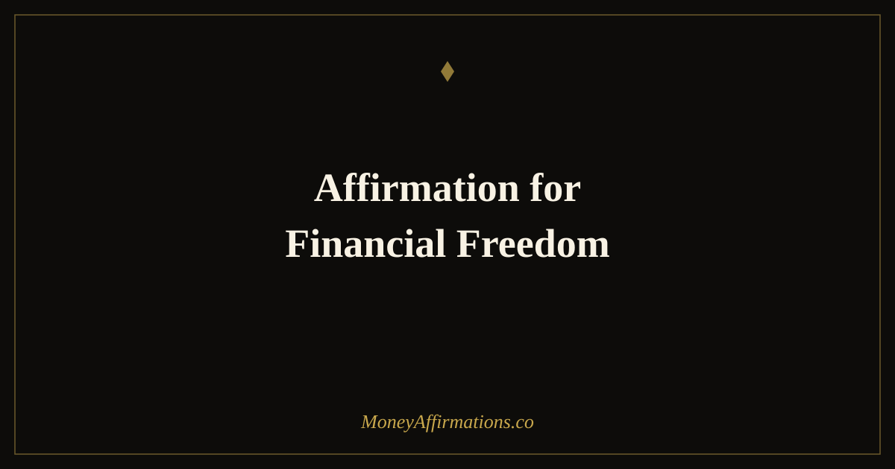

Affirmation for Financial Freedom: 30 Statements to Break Free

Financial freedom is not a single destination — it is a state of mind that changes how you relate to every financial decision you make. Most people think of it as a number: the amount in a savings account, the point at which income from investments covers expenses, the day the debt is finally gone. But long before that number is reached, something has to shift internally. People who achieve financial freedom almost universally describe a change in how they think about money well before their bank balance confirms it.
These 30 affirmations for financial freedom are designed to support that internal shift. They address the specific beliefs that keep people financially stuck: the conviction that freedom is for other people, that the numbers never quite add up, and that security is always one crisis away. Used consistently alongside practical financial habits, they change the orientation from which the whole journey is made — and that orientation determines everything.
What are financial freedom affirmations?
Financial freedom affirmations are present-tense statements that affirm your capacity to live without financial constraint, fear, or dependence on circumstances outside your control. They are distinct from general abundance affirmations because they centre on independence and security rather than simply more money. The target belief is not "I have a lot" but "I am free" — a meaningfully different psychological state.
They work by disrupting the scarcity cycle that keeps financial progress slow: the chronic low-grade stress of financial insecurity consumes cognitive resources, reduces quality decision-making, and makes long-term thinking difficult. Affirmations for financial freedom introduce the felt sense of security and possibility that normally only follows financial progress — and that felt sense, established first, tends to accelerate the progress itself. For a deeper collection in this area, see the financial freedom affirmations post.
30 affirmations for financial freedom
- I am on a clear, committed path to complete financial freedom.
- My financial decisions today are building the independence I claim tomorrow.
- I release all beliefs that say freedom is for other people — it is for me too.
- I am becoming financially free through consistent, intelligent, aligned action.
- My money works for me, and each year that work grows stronger.
- I choose freedom over comfort in every financial decision that matters.
- Financial independence is not a dream for me — it is a direction I am actively moving in.
- I save, invest, and build assets because I understand the life they will create.
- Every pound and dollar I direct wisely today is a step toward a free tomorrow.
- I am no longer defined by what I owe — I am defined by where I am going.
- My income grows, my expenses are intentional, and my freedom compounds.
- I have the clarity, the patience, and the discipline to become truly financially free.
- Financial freedom is my natural destination and I move toward it every single day.
- I release the fear of money and replace it with the certainty of financial capability.
- I make choices that future me will thank current me for.
- My relationship with money is one of agency, not anxiety.
- I am building a financial life that gives me options — always more options.
- The gap between where I am and financial freedom closes with every smart decision I make.
- I invest in myself, in assets, and in knowledge because I take my freedom seriously.
- I am free from the financial patterns that held me back — I operate from a new story now.
- My future is not determined by my past financial mistakes — only by my present choices.
- I have enough, I do enough, and I am building toward more than enough.
- Financial freedom is achievable, measurable, and already underway in my life.
- I live below my means by choice, not by force — and that choice is my greatest financial asset.
- Every debt I clear, every asset I build, and every habit I form makes freedom more real.
- I am the kind of person who finishes what they start — especially financially.
- My financial independence matters, and I protect it with my daily decisions.
- I choose long-term freedom over short-term ease, and I am proud of that choice.
- I am free from financial stress and I build that freedom stronger every day.
- Financial freedom is not something that happens to me — it is something I am creating.
How to use these affirmations
Financial freedom affirmations are most powerful when connected directly to your freedom number — whatever financial independence means specifically to you. Before your practice, write down one concrete marker of financial freedom: a savings target, a debt-free date, an income goal, a specific net worth. Then choose five affirmations and read them with that number in mind. The specificity creates a psychological bridge between the statement and the actual financial goal, which is what keeps the practice from floating into abstraction.
Use them at moments of financial temptation as well as in your regular morning practice. When a purchase, a financial shortcut, or a temptation to avoid a savings transfer arises, one affirmation said aloud — "I choose freedom over comfort in every financial decision that matters" — is often enough to reactivate the longer-term identity that short-term impulse was about to override. This is affirmation used as a real-time decision tool, not just a morning ritual, and it is one of the most practically effective applications of the practice. The financial freedom affirmations collection provides further statements across a range of financial freedom themes.
The psychology of financial stress and why freedom starts as a felt state
Princeton researchers Sendhil Mullainathan and Eldar Shafir documented a striking finding in their research on scarcity: financial stress does not just feel bad — it measurably impairs cognition. People under financial pressure score lower on IQ-equivalent tests, make worse long-term decisions, and are less able to follow through on financial plans. This is not because financially stressed people are less intelligent; it is because the bandwidth occupied by financial worry is bandwidth that cannot be used for anything else.
Financial freedom affirmations work, in part, by reducing the cognitive load of financial anxiety — creating enough psychological breathing room for clearer thinking. But they do something more specific than simply reducing stress: they introduce the felt sense of financial security before it has been externally earned. Research on prospective mental simulation — imagining a desired future state in detail — shows that vividly experiencing the emotional state of a goal accelerates the behaviours needed to achieve it. When you consistently affirm the identity of a financially free person, you begin to make decisions consistent with that identity. Those decisions accumulate into real financial progress, which generates real evidence, which makes the belief stronger. The internal shift precedes and accelerates the external one.
Tips to make them work faster
- Define your freedom number. Affirmations for financial freedom without a specific target are motivational but not directional. Name your number, your date, or your condition.
- Use them at financial decision points. Saying one affirmation before a significant financial choice — saving, investing, declining a purchase — transforms it from a rule-following moment into an identity-confirming one.
- Track one freedom metric weekly. Net worth, debt balance, savings rate — pick one and note it every Friday. Affirmations reinforce progress; visible progress reinforces affirmations.
- Combine with the affirmation for the specific barrier. If debt is the obstacle, focus on debt-related affirmations. If overspending is the issue, use the spending-choice statements. Targeted practice outperforms general repetition.
- Treat setbacks as data, not disproof. When an affirmation practice encounters a hard financial month, the instinct is to abandon the practice. That is the worst moment to stop. A setback does not disprove the direction — it is part of the journey the affirmation is designed to support.
Frequently Asked Questions
What does financial freedom actually mean?
Financial freedom means different things to different people, but at its core it is the state in which your financial life no longer runs on fear or scarcity. For some, it means passive income covering all expenses. For others it is the absence of debt, a fully funded emergency fund, or simply the ability to make major life decisions without money being the deciding factor. Affirmations work best when you have defined what freedom means specifically to you — because vague goals produce vague progress.
Can affirmations help with debt or do they only work for people already doing well financially?
Affirmations are often most useful precisely when finances are most constrained. Financial stress narrows thinking — a well-documented psychological phenomenon — and affirmations provide a counter-pressure that restores enough cognitive clarity to see options, make plans, and act strategically. They do not pay off debt on their own, but they reduce the fear-state that makes clear financial thinking difficult, which is often the real barrier to progress.
How is financial freedom different from just wanting more money?
Financial freedom is fundamentally about the relationship between your life and your money, not just the amount. Many people with high incomes are not financially free because stress, debt, or lifestyle inflation keeps them trapped. Financial freedom affirmations specifically target beliefs about control, security, and choice — not just abundance. That is why they work differently from general money affirmations and are worth using alongside practical financial planning.
For a broader collection of statements aligned with building lasting wealth and independence, explore the full wealth affirmations collection and build a daily practice that moves you consistently toward the financial life you are working to create.